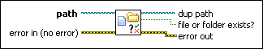

Check if File or Folder Exists VI
Owning Palette: Advanced File VIs and Functions
Requires: Base Development System
Checks whether a file or folder exists on disk at a specified path. This VI works with standard files and folders as well as files in LLB files.

 Add to the block diagram Add to the block diagram |
 Find on the palette Find on the palette |